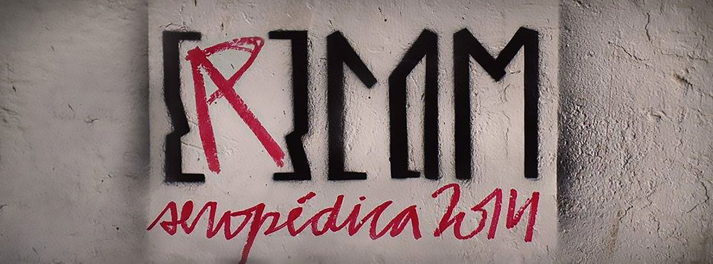

Erecom
Erecom é o Encontro Regional de Estudantes de Comunicação. Em 2014 foi realizado em Seropédica e teve como tema Comunicação, Cultura e Resistência. Sua identidade visual empresta elementos da comunicação popular e arte urbana exaltando seu papel de resistência. Além disso todos os materiais do encontrista abrem a possibilidade de customização, para dar voz à todas as identidades.
